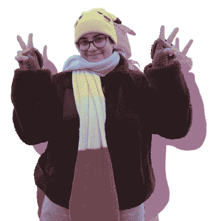

Info
I'm Desteny ^_^ enjoyer of cats, art, the indie web, and having fun.
2nd year Computer Science student @ University of Puerto Rico, Río Piedras. Interested in Web Development, and Web Design.
Making hand-coded websites as a way of making art and leaving a bit of myself on the web since 2023.
Available for web commissions and computer science interships.
Skills: HTML, CSS, JavaScript, C++, Static Site Generators, Git.
Currently learning: PHP, databases, and node.js
Publications
(2024) Maren Bell, Hello, World (Wide Web)!